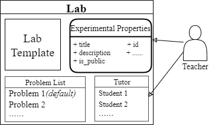

Advanced Manual: Teacher
1 Advanced Features
1.1 Permission Description
In addition to the general experimental functions, the ONL platform also provides advanced functions that can be used at higher levels of access.
权限的表
Before introducing the advanced features, special permissions need to be described.
1.2 Permission: Teacher
The ONL platform provides a functional module for teachers to publish experiments.
There are several lab templates available on the ONL platform, each corresponding to one type of network experiment. Users with “Teacher” status can create a lab on the ONL platform by selecting the desired lab template and providing the lab configuration.
To facilitate the teaching of network courses, teachers can add teaching assistant users (called tutors) when creating labs. A tutor is not a separate identity; it is dependent on the “Teacher” and has additional privileges only in the corresponding lab.
2 ONL Instruction
This section describes how teachers can publish labs.
2.1 Publish A Lab

Different lab templates are provided on the ONL platform, and teachers can publish labs based on existing lab templates. When creating a lab, fill in the information:
Experimental attributes. For example, title, Tag, public or not.
Tutors. Add the list of tutors for the lab. Students who become tutors can obtain special privileges under the experiment and view the submission records.
2.2 Manage Labs
client bash
>>> contest create (lab_list config path)
example (take the TCP GBN Sender experiment as an example)
# show lab_list
root >>> contests
id title description
# create lab_list
root >>> contest create Contest.json
contest create success
# show lab_list
root >>> contests
id title description
1 B_01 Test contest
Contest.json
{
"title": "B_01",
"description": "Test contest",
"password": "",
"visible": true,
"contest_admin": [],
"allowed_ip_ranges": null
}
2.3 Manage Problems
Teachers can edit labs, such as modifying experimental attributes, deleting labs, and managing problems.
client bash
>>> contest modify (config path)
2.4 View Submissions
Teacher users can view and export all submission records under the lab.
client bash
>>> contest submissions (contest_id)
3 Teacher Guidance
In this section, we present the available experiment templates.This section is continuously updated.
3.1 GBN sender
Overview
How does the experimental code work
Configuration
The test cases and lab specific configuration fields is stored in lab_config.json file. The configuration options are as follows (default):
{
"seqno_width": 4,
"loss_rate": 0.1,
"max_delay": 30,
"timeout": 60,
"testcases": [
"this_is_some_text",
"abcdefghijklmnopqrstuvwxyzABCDEFGHIJKLMNOPQRSTUVWXYZ"
]
}